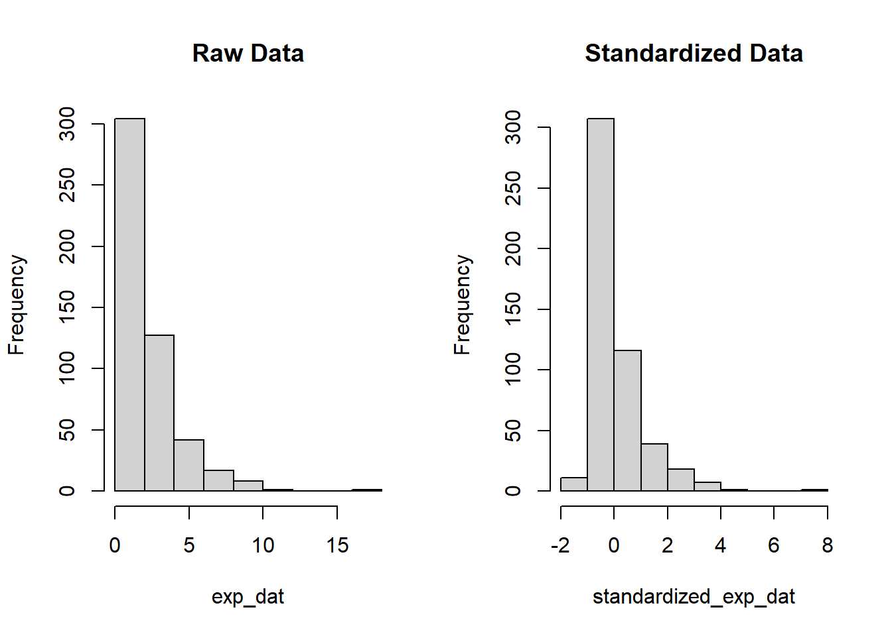

This page is part of the University of Colorado-Anschutz Medical Campus’ BIOS 6618 Recitation collection. To view other questions, you can view the BIOS 6618 Recitation collection page or use the search bar to look for keywords.
The Z-score
Definition
If \(X \sim N(\mu,\sigma^2)\), we can leverage many of the features of the normal distribution (e.g., symmetric, approximately 95% of the distribution falling within \(\mu \pm 2 \times \sigma\)). However, \(X\) is contingent upon the context of a given problem. \(P(X \geq 72)\) may make sense if estimating the probability that height is greater than 72 inches for a human, but is less informative if we are examining the heights of ants.
Instead, we can standardize any normally distributed variable with some mean, \(\mu\), and a variance, \(\sigma^2\), so that it has a unitless mean of 0 and variance of 1:
\[ Z = \frac{X-\mu}{\sigma} \]
Now, a calculation of \(P(Z>1)\) has a consistent meaning across any standard normal random variable (i.e., the probability that something is 1 standard deviation above the mean or greater).
The trade-off is that the measure is essentially contextless, we would need to transform back to our original scale if we wanted to evaluate with respect to a given \(\mu\) and \(\sigma^2\). However, if someone presented a range of comparisons using Z-scores, we could quickly identify which ones were more significant for hypothesis testing (i.e., had a large positive or negative value) or had more extreme values (e.g., an observation with a value of 8 indicates it is 8 standard deviations above the mean, which is highly unlikely if the data is truly normally distributed).
Where Do We Find \(Z\) Scores?
Throughout the semester, we will see various statistical tests utilizing the \(Z\)-statistic to evaluate statistical significance. We will also see it used when calculating a confidence interval when we are willing or able to assume normality.
Standardizing Variables
While only normal random variables, \(X\), can be made into a standard normal random variable, \(Z\). We can still standardized our data more generally to have a mean of 0 and standard deviation of 1 (note that the variance is also 1 since \(1^{2}=1\)). For situations where we are calculating the sample mean, we can rely on the central limit theorem to know that \(\bar{X}\) is normally distributed, which can be transformed to a standard normal distribution itself.
For raw data, the scale() function can standardize any variable, whether or not it is normally distributed. Let’s start by examining a normally distributed random variable:
Code
# standardize a normally distributed variableset.seed(888)# simulate raw datanorm_dat <-rnorm(n=500, mean=50, sd=15)mean(norm_dat)
[1] 50.3258
Code
sd(norm_dat)
[1] 14.88208
Code
# standardize to mean=0, sd=1standardized_norm_dat <-scale(norm_dat)mean(standardized_norm_dat)
[1] 1.185051e-16
Code
sd(standardized_norm_dat)
[1] 1
Code
# create histograms of raw data vs. standardized datapar(mfrow=c(1,2))hist(norm_dat, main='Raw Data')hist(standardized_norm_dat, main='Standardized Data')
We see that the histograms are fairly normal looking (since we did simulate normally distributed data), but that the standardized version of our data has a mean near 0 with a standard deviation of 1.
For non-normally distributed data, we see we still achieve the same mean of 0 and standard deviation of 1, but we do not force normality upon the data. For example, consider exponentially simulated data:
Code
# standardize a normally distributed variableset.seed(888)# simulate raw dataexp_dat <-rexp(n=500, rate=0.5)mean(exp_dat)
[1] 2.082536
Code
sd(exp_dat)
[1] 2.031941
Code
# standardize to mean=0, sd=1standardized_exp_dat <-scale(exp_dat)mean(standardized_exp_dat)
[1] 9.307084e-17
Code
sd(standardized_exp_dat)
[1] 1
Code
# create histograms of raw data vs. standardized datapar(mfrow=c(1,2))hist(exp_dat, main='Raw Data')hist(standardized_exp_dat, main='Standardized Data')

We see in this case that the standardized variable is no longer forced to have \(x \geq 0\) since its mean is 0 and the standard deviation is 1. The strong right skew to our data points is still present after transformation.
Source Code
---title: "Z-Scores"author: name: Alex Kaizer roles: "Instructor" affiliation: University of Colorado-Anschutz Medical Campustoc: truetoc_float: truetoc-location: leftformat: html: code-fold: show code-overflow: wrap code-tools: true---```{r, echo=F, message=F, warning=F}library(kableExtra)library(dplyr)```This page is part of the University of Colorado-Anschutz Medical Campus' [BIOS 6618 Recitation](/recitation/index.qmd) collection. To view other questions, you can view the [BIOS 6618 Recitation](/recitation/index.qmd) collection page or use the search bar to look for keywords.# The Z-score## DefinitionIf $X \sim N(\mu,\sigma^2)$, we can leverage many of the features of the normal distribution (e.g., symmetric, approximately 95% of the distribution falling within $\mu \pm 2 \times \sigma$). However, $X$ is contingent upon the context of a given problem. $P(X \geq 72)$ may make sense if estimating the probability that height is greater than 72 inches for a human, but is less informative if we are examining the heights of ants.Instead, we can *standardize* any normally distributed variable with some mean, $\mu$, and a variance, $\sigma^2$, so that it has a **unitless** mean of 0 and variance of 1:$$ Z = \frac{X-\mu}{\sigma} $$Now, a calculation of $P(Z>1)$ has a consistent meaning across any standard normal random variable (i.e., the probability that something is 1 standard deviation above the mean or greater). The trade-off is that the measure is essentially contextless, we would need to transform back to our original scale if we wanted to evaluate with respect to a given $\mu$ and $\sigma^2$. However, if someone presented a range of comparisons using Z-scores, we could quickly identify which ones were more significant for hypothesis testing (i.e., had a large positive or negative value) or had more extreme values (e.g., an observation with a value of 8 indicates it is 8 standard deviations above the mean, which is highly unlikely if the data is truly normally distributed).## Where Do We Find $Z$ Scores?Throughout the semester, we will see various statistical tests utilizing the $Z$-statistic to evaluate statistical significance. We will also see it used when calculating a confidence interval when we are willing or able to assume normality.## Standardizing VariablesWhile only normal random variables, $X$, can be made into a standard normal random variable, $Z$. We can still standardized our data more generally to have a mean of 0 and standard deviation of 1 (note that the variance is also 1 since $1^{2}=1$). For situations where we are calculating the sample mean, we can rely on the *central limit theorem* to know that $\bar{X}$ is normally distributed, which can be transformed to a standard normal distribution itself.For raw data, the `scale()` function can standardize any variable, whether or not it is normally distributed. Let's start by examining a normally distributed random variable:```{r}# standardize a normally distributed variableset.seed(888)# simulate raw datanorm_dat <-rnorm(n=500, mean=50, sd=15)mean(norm_dat)sd(norm_dat)# standardize to mean=0, sd=1standardized_norm_dat <-scale(norm_dat)mean(standardized_norm_dat)sd(standardized_norm_dat)# create histograms of raw data vs. standardized datapar(mfrow=c(1,2))hist(norm_dat, main='Raw Data')hist(standardized_norm_dat, main='Standardized Data')```We see that the histograms are fairly normal looking (since we did simulate normally distributed data), but that the standardized version of our data has a mean near 0 with a standard deviation of 1.For non-normally distributed data, we see we still achieve the same mean of 0 and standard deviation of 1, but we do not force normality upon the data. For example, consider exponentially simulated data:```{r}# standardize a normally distributed variableset.seed(888)# simulate raw dataexp_dat <-rexp(n=500, rate=0.5)mean(exp_dat)sd(exp_dat)# standardize to mean=0, sd=1standardized_exp_dat <-scale(exp_dat)mean(standardized_exp_dat)sd(standardized_exp_dat)# create histograms of raw data vs. standardized datapar(mfrow=c(1,2))hist(exp_dat, main='Raw Data')hist(standardized_exp_dat, main='Standardized Data')```We see in this case that the standardized variable is no longer forced to have $x \geq 0$ since its mean is 0 and the standard deviation is 1. The strong right skew to our data points is still present after transformation.